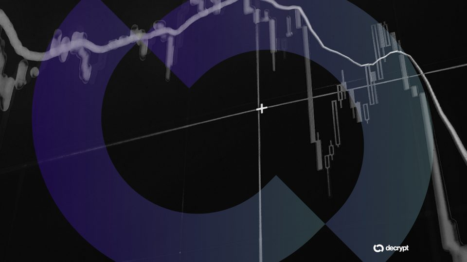
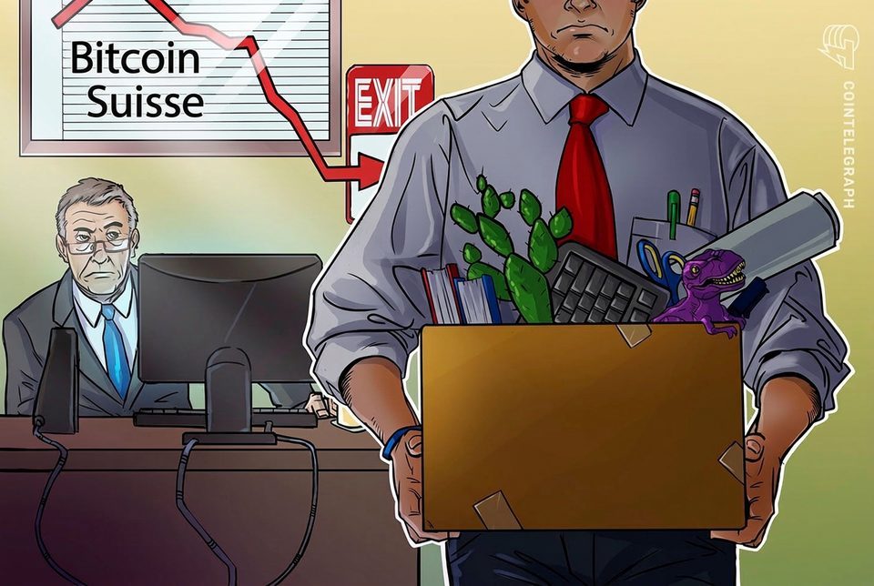
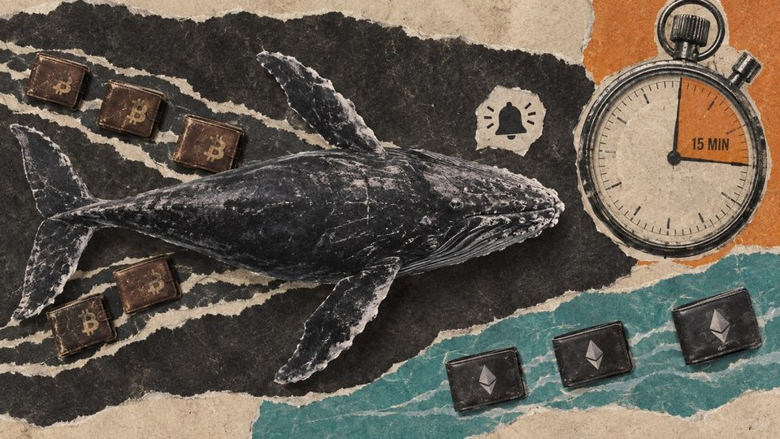
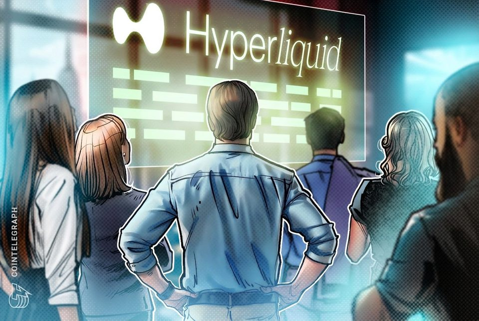
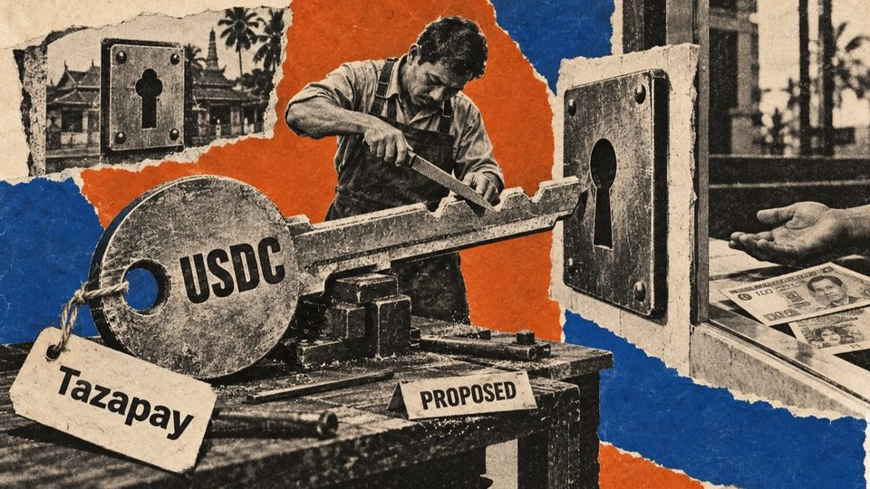

September 11, 2026
Daily headline set with source diversity, cleaned links, and local static rendering.
Cyberattacks on Law Firms Nearly Double as Stolen Documents Hit the Dark Web
Greenberg Traurig said documents were posted to the dark web, while BakerHostetler recorded a near-doubling of law-firm incidents in 2025.

Here's what happened in crypto today
Need to know what happened in crypto today? Here is the latest news on daily trends and events impacting Bitcoin price, blockchain, DeFi, Web3 and crypto regulation.
Coinbase CEO sees Bitcoin at $400,000, but first it has to clear $81,000
The Coinbase CEO’s personal outlook anticipates gains ahead of the next halving, with Bitcoin still well below its previous peak. The post Coinbase CEO sees Bitcoin at $400,000, but first it has to clear $81,000...
The legal drama of imprisoned Sam Bankman-Fried is waiting on its last act
The legal drama of imprisoned Sam Bankman-Fried is waiting on its last act

Bitcoin Golden Cross Flickers Off as Rate-Hike Bets Firm Up
A rapidly changing interest rates market has changed the near-term outlook on the Bitcoin chart. Here’s why.

Bitcoin Suisse to shift up to half of Swiss jobs abroad
The Swiss crypto financial services firm plans to move back-office functions to lower-cost international hubs as it expands its global wealth and asset management business, according to Finews.

Philadelphia Fed finds Bitcoin traders follow whale signals faster than Ethereum users
A Philadelphia Fed event study found broad same-direction activity among non-whale BTC wallets, while ETH's clearest response was concentrated among larger sellers. The post Philadelphia Fed finds Bitcoin traders follow...
With Fed rate hike all but assured, here's how markets might react
With Fed rate hike all but assured, here's how markets might react
OpenAI Asks Congress Whether an AI Slowdown Would Be Legal
The company is seeking clarity on antitrust rules as researchers call for restraint and experts warn that competition encourages companies to overlook risks.

Hyperliquid's biggest risk is regulation, says Ran Neuner
The Crypto Banter founder said Hyperliquid’s network effects give it a strong competitive moat, but regulatory uncertainty remains its biggest threat.

Why Circle is spending $400M to fix the last mile holding stablecoins back from real-world payouts
The purchase could tighten Circle’s control of regulated payout infrastructure while partner banks retain their own risks and duties. The post Why Circle is spending $400M to fix the last mile holding stablecoins back...

India's richest state is exploring tokenizing its own assets to fund new infrastructure
India's richest state is exploring tokenizing its own assets to fund new infrastructure